La pasada medianoche , el precio de la bombona de butano que comercializa Repsol YPF subió 174 pesetas.
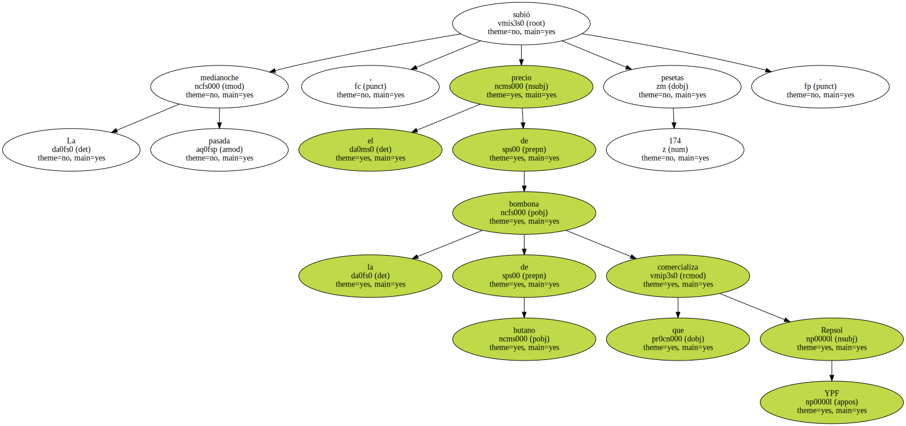Los consumidores tendrán que pagar ahora 1.309 pesetas por cada envase de 12,5 kilogramos , lo que supone un aumento del 15,33% respecto del precio anterior.
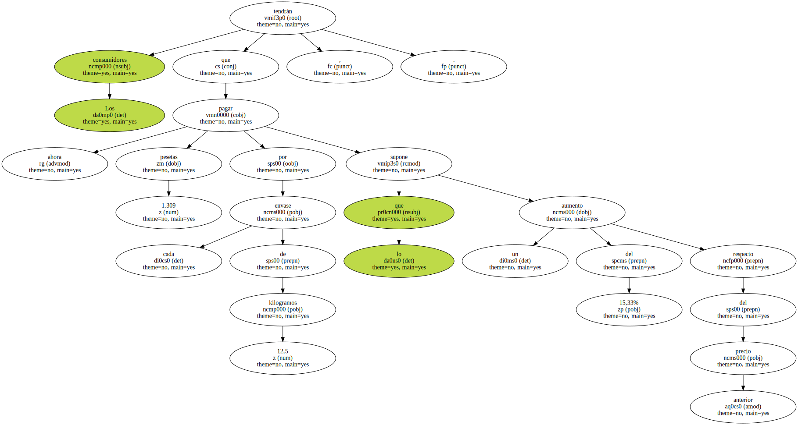Esta nueva tarifa coincide con la máxima que había autorizado el Gobierno en octubre del año pasado.

La petrolera hispanoargentina explicó que sólo ha repercutido parte de las 254 pesetas de incremento del coste de la materia prima desde que fijó la última tarifa.
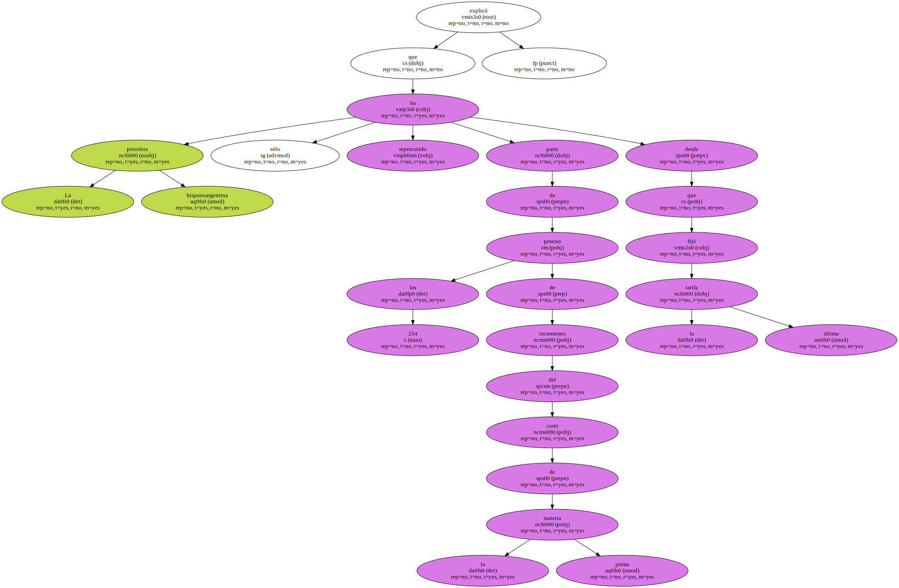Repsol insiste en que los precios de los gases licuados en España son los más bajos de toda Europa.
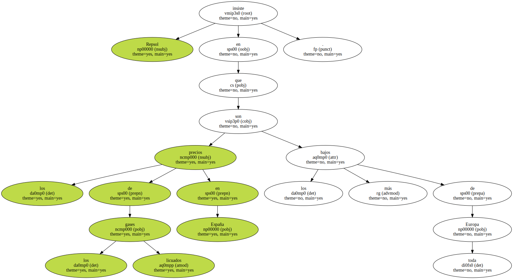La media comunitaria es de 2.586 pesetas por bombona aunque en Francia llega a 3.100 pesetas y en Portugal a 1.851 pesetas.
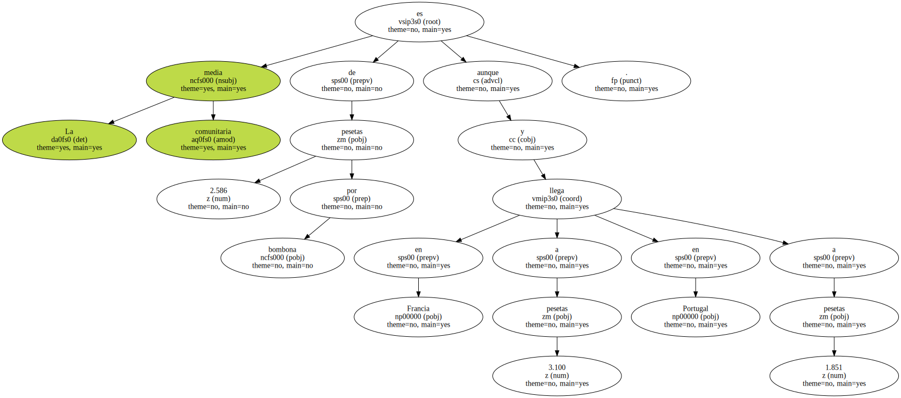Estos precios , añadió la compañía , no incluyen la entrega a domicilio como en España.
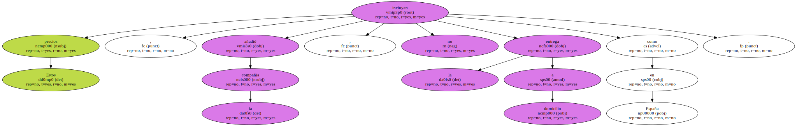El pasado 6 de octubre , el Gobierno aprobó un nuevo sistema para fijar los precios de venta al público de los gases licuados.
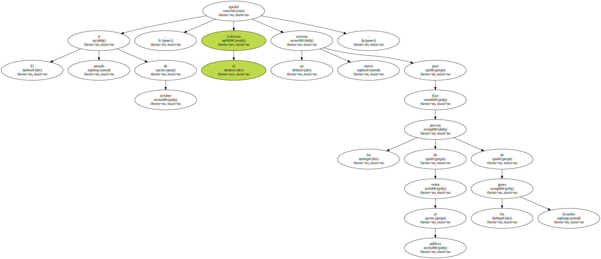Precisamente aumentó su máximo de 1.115 a 1.309 pesetas.
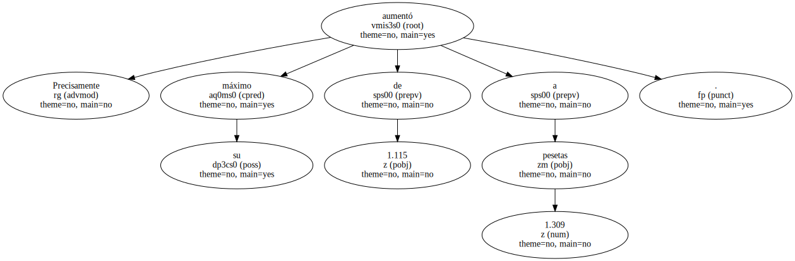Ya entonces , Repsol subió el coste de la bombona de butano a 1.135 pesetas , es decir , 20 pesetas más.
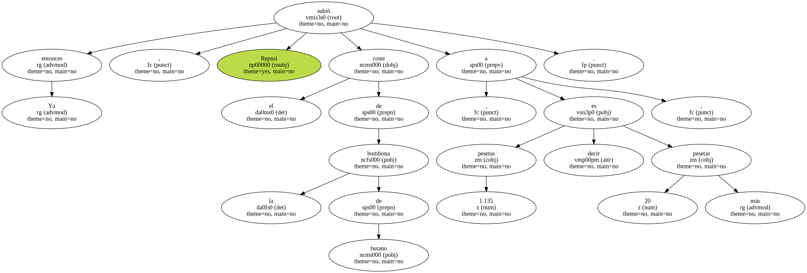MAL AÑO.
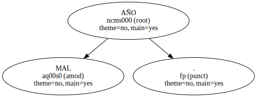El PSOE piensa que esta decisión marcará una mala entrada de año para las familias más desfavorecidas porque ellas son las que más usan el gas butano en sus casas.
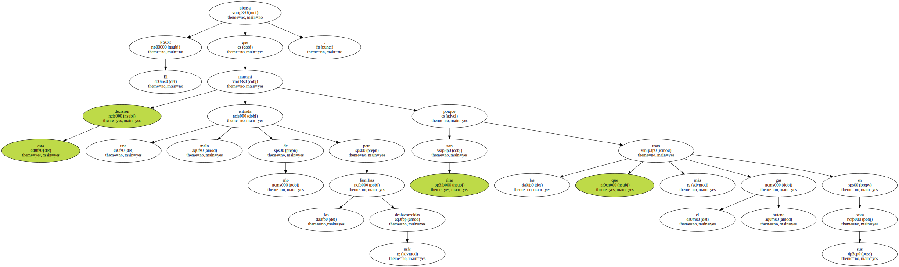A juicio de la oposición , la culpa de esta subida es del Gobierno que ha ido permitiendo a Repsol sucesivos incrementos en el precio del butano.
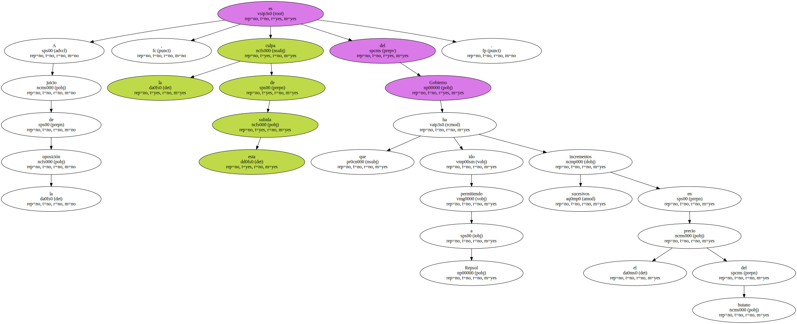